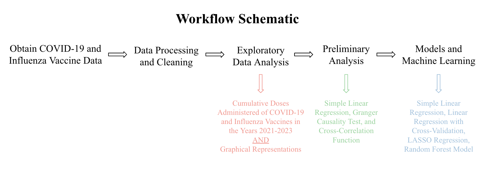
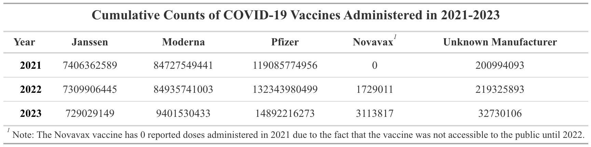
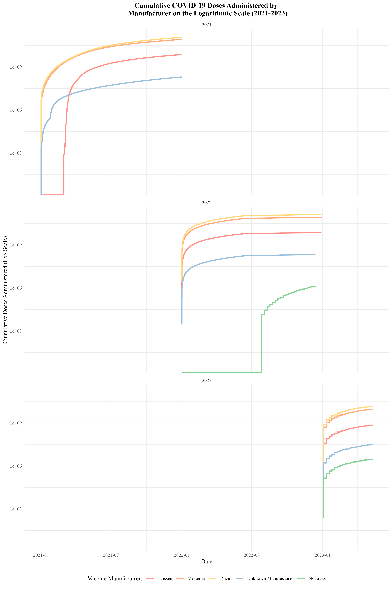
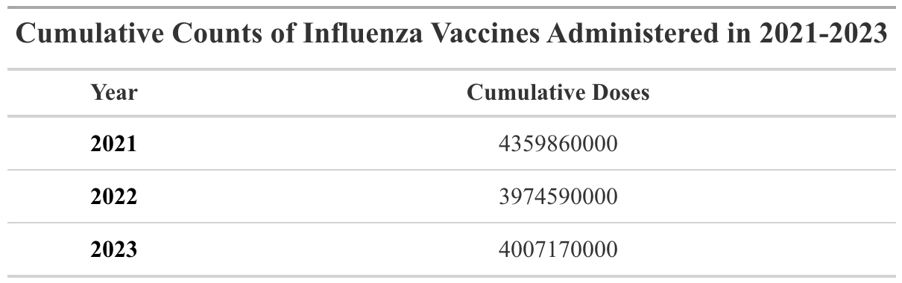
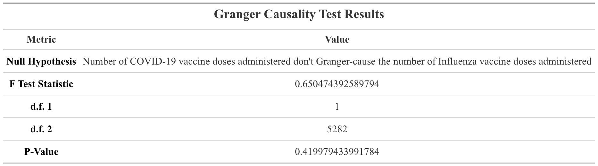
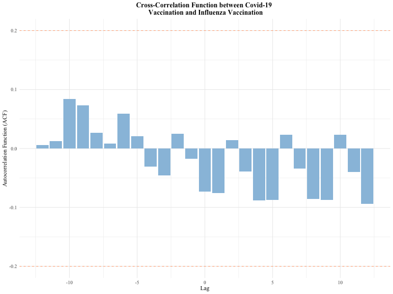
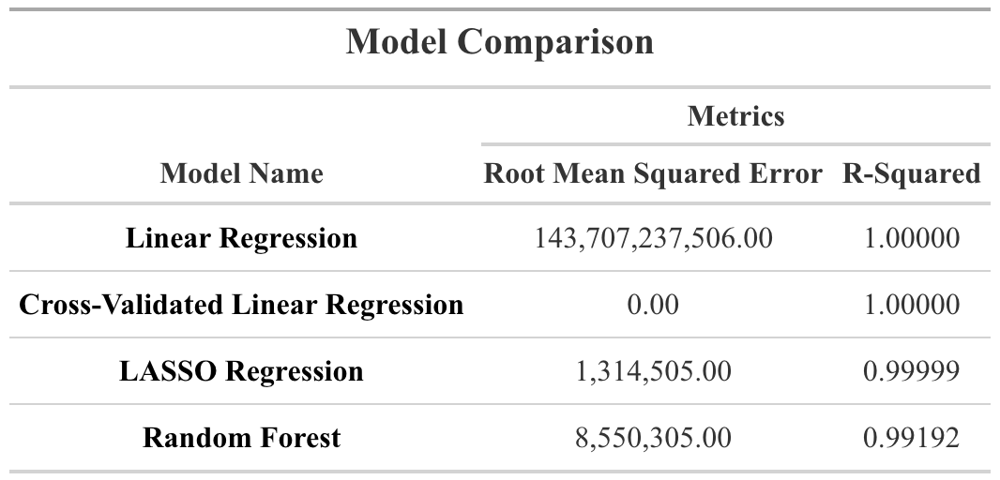
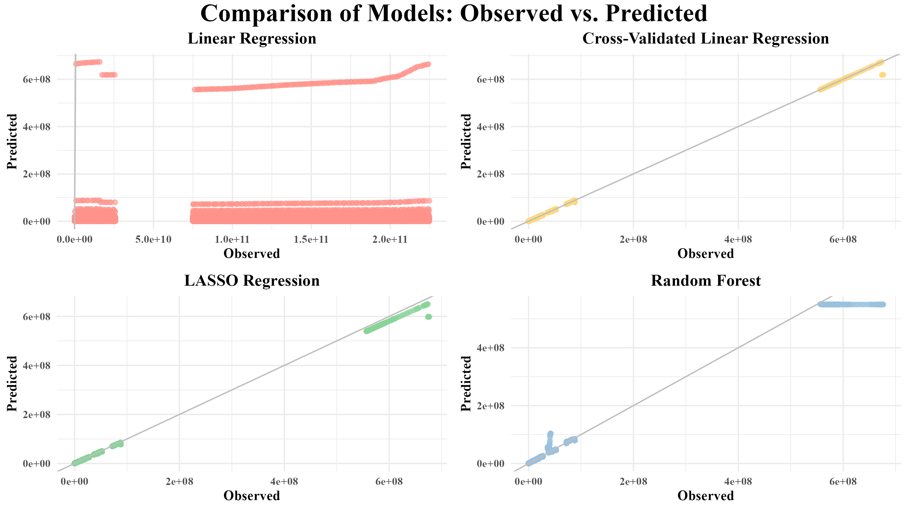

Analysis of COVID-19 and Influenza Vaccine Associations
Authors
- Natalie Cann \(^{1,2}\)
Author Affiliations
- Masters in Public Health Candidate, University of Georgia
- B.S. Microbiology, Virginia Tech
\(\dagger\) Disclaimer: The opinions expressed in this article are the author’s own and don’t reflect those of their university affiliations.
1 Summary/Abstract
Add in Summary/Abstract Once Study is Complete
2 Introduction
2.1 General Background Information
Respiratory illnesses are a large burden to both medical and public health systems. These illnesses are known to spike in the colder months, such as December, January, and February. One such respiratory illness is Influenza. Seasonal Influenza in humans is caused by influenza viruses that undergo antigenic drift and antigenic shift, resulting in novel flu viruses each year. Antigenic drift is known to occur when mutations develop within the surface proteins hemagglutinin (HA) and neuraminidase (NA) [@cdcFluViruses2024]. These surface proteins serve as anitgens which are recognized by our immune systems, which will produce antibodies to recognize the surface protein antigens [@cdcFluViruses2024]. Antigenic shift results when entirely new HA and/or NA proteins develop, creating a novel flu virus [@cdcFluViruses2024]. According to the CDC, the most common month for a peak in flu cases to be observed is February; 17 of the past 40 flu seasons have reached peaks in February [@cdcFluSeason2024].
Another respiratory virus is COVID-19, also known as severe acute respiratory syndrome coronavirus 2 (SARS-CoV-2) [@CoronavirusDisease2019]. COVID-19 was declared a pandemic in 2020. The virus is known to spread through fluid droplets shared between individuals in close contact as well as through the air [@CoronavirusDisease2019]. The spike protein is known to mediate entry of the virus into host cells via its S1 subunit, which binds to a receptor on the host cell, and S2 subunit, which allows the virus to fuse with the host cell [@liStructureFunctionEvolution2016]. Therefore, the spike protein is a major antigen of the COVID-19 virus recognized by the immune system.
Many individuals receive vaccinations to protect themselves from these respiratory illnesses. Flu vaccines are designed to protect individuals against the flu strains that are predicted to be most common during the upcoming flu season [@cdcKeyFactsSeasonal2025]. The flu vaccine results in the production of antibodies within roughly two weeks after vaccination [@cdcKeyFactsSeasonal2025]. The effectiveness of the flu vaccines varies with strains in circulation and the individual’s health status [@cdcKeyFactsSeasonal2025]. The flu vaccine will be more beneficial during years which the vaccine matches the strains of that season [@cdcKeyFactsSeasonal2025].
There are two different types of COVID-19 vaccinations available in the United States. The first is the mRNA vaccine, which uses mRNA created in a laboratory that triggers an immune response within the body that produces antibodies to protect against COVID-19 [@cdcCOVID19VaccineBasics2024]. The second is the protein subunit vaccine, which contains spike proteins from the virus as well as an adjuvant; this enables the body to produce antibodies and better recognize the spike protein in the future [@cdcCOVID19VaccineBasics2024]. The Pfizer-BioNTech and Moderna vaccines are both mRNA vaccines [@ComparingCOVID19Vaccines]. The Novavax vaccine is a protein subunit vaccine [@ComparingCOVID19Vaccines]. The Janssen vaccine, also known as the Johnson and Johnson vaccine was disconintued [@ComparingCOVID19Vaccines]. This vaccine utilized an adenvovirus as a vector [@JohnsonJohnsonAdenovirus]. Adenovirus vaccines use an omnipresent virus that is altered so that it cannot cause illness or integrate into the host’s DNA [@JohnsonJohnsonAdenovirus]. The adenovirus is engineered to contain a genes involved in making the spike protein COVID-19, which then leads to the immune system producing antibodies for the spike protein [@JohnsonJohnsonAdenovirus].
2.2 Description of Data and Data Sources
The datasets used in this analysis are both from the CDC. The first dataset, regarding COVID-19 vaccinations, contains information on the distribution and administration of COVID-19 vaccinations between 2020 and 2023. The second dataset, focusing on influenza vaccinations, contains information on the distribution of flu vaccines between 2018 and 2024. The influenza vaccination dataset is grouped by flu-season. More information on the datasets can be found in the “Methods” section under “Data Acquisition.”
2.3 Questions to be Addressed
I aim to assess if the administration of the COVID-19 vaccine is associated with its manufacturer. I will examine whether or not certain manufacturers had a greater number of administered doses. I will also assess whether or not the administration of the COVID-19 vaccine is associated with the administration of the flu vaccine by looking at the number of doses of the vaccines administered in the same year.
3 Methods
3.1 Schematic of Workflow for Analysis
In order to answer my first aim, which is to determine if the administration of the COVID-19 vaccine is associated with its manufacturer, I will run several models. These models will include simple linear regression, linear regression with cross-validation, LASSO regression, and random forest. To determine if certain manufacturers of tehe COVID-19 vaccine had a greater number of administered doses, I will perform exploratory data analysis to determine the cumulative doses of the COVID-19 vaccine administered each year between 2021 and 2023. I will also do this for the Influenza vaccine as well. To determine whether or not the administration of the COVID-19 vaccine is associated with that of the influenza vaccine, I will perform a Granger causality test and a cross-correlation function.
3.2 Data Aquisition
COVID-19 Dataset: https://data.cdc.gov/Vaccinations/COVID-19-Vaccinations-in-the-United-States-Jurisdi/unsk-b7fc/about_data
This dataset came from the CDC and contains information on the distribution and administration of COVID-19 vaccinations between 2020 and 2023.Data is included from all sites that distribute and administer vaccinations in the U.S.; such as jurisdictional partner clinics, retail pharmacies, dialysis centers, long-term care facilities, Federal Emergency Management Agency (FEMA), and federal entity facilities. The CDC states that the dataset was provided by IISInfo. I downloaded the data directly from the CDC website provided above. This dataset was last updated May 12, 2023.
Influenza Dataset: https://data.cdc.gov/Vaccinations/Weekly-Cumulative-Doses-in-Millions-of-Influenza-V/k87d-gv3u/about_data
This dataset also came from the CDC and contains information regarding the doses of flu vaccines in Millions distributed between 2018 and 2024. According to the CDC website, the dataset was provided by the National Center for Immunization and Respiratory Diseases (NCIRD). This dataset was last updated March 29, 2024.
3.3 Data Cleaning Process
The COVID_vaccine dataset contains 109 variables and 38,488 observations. I am specifically interested in the variables that contain the counts of administered COVID-19 vaccines by manufacturer (Administered_Janssen, Administered_Moderna, Administered_Pfizer, Administered_Novavax, and Administered_Unk_Manuf) as well as the variable “date” (day that the vaccine data was reported).
The flu_vaccine dataset contains 9 variables and 193 observations (considerably less than the COVID_vaccine dataset). The variables of interest from this dataset include: year (Influenza_Season) and the cumulative doses distributed (Cumulative_Flu_Doses_Distributed; Note: this is in millions).
I performed the following data processing and cleaning steps for the COVID-19 vaccine dataset: - Defined variables - Assessed missingness of data and variable classes - Used the lubridate package to fix the date format - Select variables of interest to work with for analysis - Create separate datasets for 2021, 2022, and 2023 - Create a new variable that calculates the cumulative doses distributed and administered for each manufacturer - Save final datasets as RDS files
I performed the following data processing and cleaning steps for the influenza vaccine dataset: - Defined variables - Assessed missingness of data and variable classes - Used the lubridate package to fix the date format - Create a new variable that contains the number of flu vaccine doses administered per week - Create two new variables that display the number of doses of the flu vaccine administered in millions (one variable for cumulative doses and the other for weekly doses) - Create separate datasets for 2021, 2022, and 2023 - Save final datasets as RDS files
3.4 Statistical Analysis
I will perform simple linear regressions, a granger-causality test, and cross-correlation functions to assess the relationships between the administration of the COVID-19 vaccine and its manufacturer as well as the administration of the flu vaccine. I will also run a few machine learning models, such as random forest.
4 Results
4.1 Exploratory and Descriptive analysis
The table below displays the cumulative counts of flu vaccine doses administered in 2021, 2022, and 2023.

As seen in the table above, each year Pfizer had the greatest number of vaccines administered. Followed by Moderna, Janssen, Unknown Manufacturer, and Novavax. It is important to note that Novavax was not available in 2021; it became available in late 2022. There was a large number of vaccines administered for which the manufacturer was not recorded. Unfortunately, I will not be able to use this data on vaccines administered by unknown manufacturers in my analysis.
The plot below displays the cumulative counts of COVID-19 vaccine doses administered in 2021, 2022, and 2023. This serves as a visual representation of the counts within Table 1 above. The plots were created on a logarithmic scale to enable for better visibility.

The table below displays the cumulative counts of flu vaccine doses administered in 2021, 2022, and 2023.

Table 2 reveals that out of the three years of interest, 2021 had the greatest number of influenza vaccines administered; 2022 had the fewest number of influenza vaccines administered.
The plot below displays the cumulative counts of flu vaccine doses administered in 2021, 2022, and 2023.

It is important to note that a new influenza season starts around roughly week 30 of each year, which accounts for the dip at week 30 in the graph above. The administration of the influenza vaccine seems to follow a similar distribution each year.
4.2 Basic Statistical Analysis
I performed a linear regression analysis to assess the significance of doses .

With an alpa value of 0.05, the p-values for each manufacturer are less than 0.5. This means that the manufacturer has a statistically significant impact on the number of doses administered. It can be noted that Pfizer and Moderna both have very small p-values (both of 2e-16); furthermore they have positive estimate values, indicating they have a higher number of administered does than Janssen. The negative estimate values for Novavax and Unknown Manufacturer indicate that they have a lower number of administered doses compared to Janssen.
4.3 Full analysis
Not completed yet - use one or several statistical/machine learning methods to analyze your data and make figures/tables
I completed a Granger Causality Test to assess the relationship between the administration of the COVID-19 vaccine and the flu vaccine. The results of the test are displayed in the table below.

We must fail to reject the null hypothesis (F = 0.65; p = 0.42). This suggests that changes in COVID vaccination rates do not appear to influence flu vaccination rates in a predictive sense.
I performed a Cross-Correlation Function to further assess the relationship between the administration of the COVID-19 vaccine and the flu vaccine. Specifically, this analysis assesses correlation between administration of the vaccines through time. The results of the test are displayed in the graph below.

The small peaks and bars suggest that there is a very weak correlation between the administration of covid vaccines and flu vaccines during this time period (2021-2023). There appear to be a few small negative lags, indicating that flu vaccinations might slightly precede Covid-19 vaccinations. Overall, there is no strong relationship beween the two.
I then ran a few models: simple linear regression, cross-validated linear regression, LASSO regression, and random forest. Their Root Mean Squared Errors (RMSEs) and R-squared values can be seen below.

As can be seen, it appears as though there was an issue with overfitting with each of the models.
The corresponding plots of observed vs. predicted points for each of the models can be seen below.

From Table 5 and Figure 4, it appears as though overfitting was an issue with the models. The Cross-Validated Linear Regression model appears to have performed the best, with an RMSE value equivalent to 0 and an R-squared value of 1.0. I used LASSO Regression in an attempt to reduce overfitting. However, the RMSE value is 1,314505.0 while its R-squared value is 0.99999. Unfortunatley, it seems that overfitting was not significantly reduced after LASSO Regression was performed. It appears that Simple Linear Regression performed the worst, with an incredibly high RMSE of 143,707,237,506.00 and an R-squared value of 1.0.
5 Discussion
5.1 Summary and Interpretation
Not completed yet
5.2 Strengths and Limitations
Not completed yet
- Data was obtained from CDC, which is a reliable source; but there are drawbacks to not collecting your own data
- The data is limited to the United States, so the results may not be generalizable to other countries
- Large number of covid-19 vaccines were reported as “unknown manufacturer”
- Overfitting was an issue
5.3 Conclusions
Not completed yet - include main take home messages
- Further research needs to be done to assess the relationship between the administration of the COVID-19 vaccine and the flu vaccine (especially since the covid-19 vaccine is relatively new compared to the influenza vaccine)
6 References
Note: reference formatting is determined by the CSL file specified in the YAML header